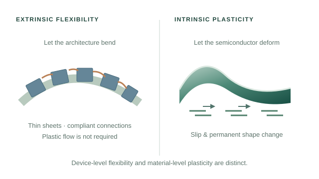
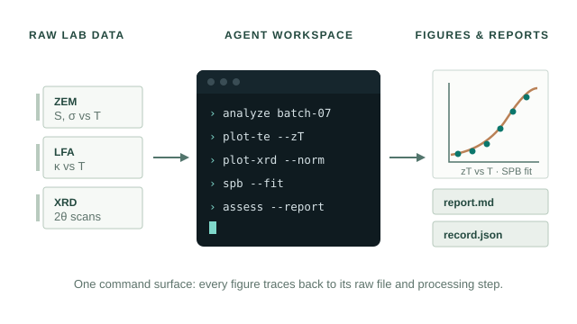
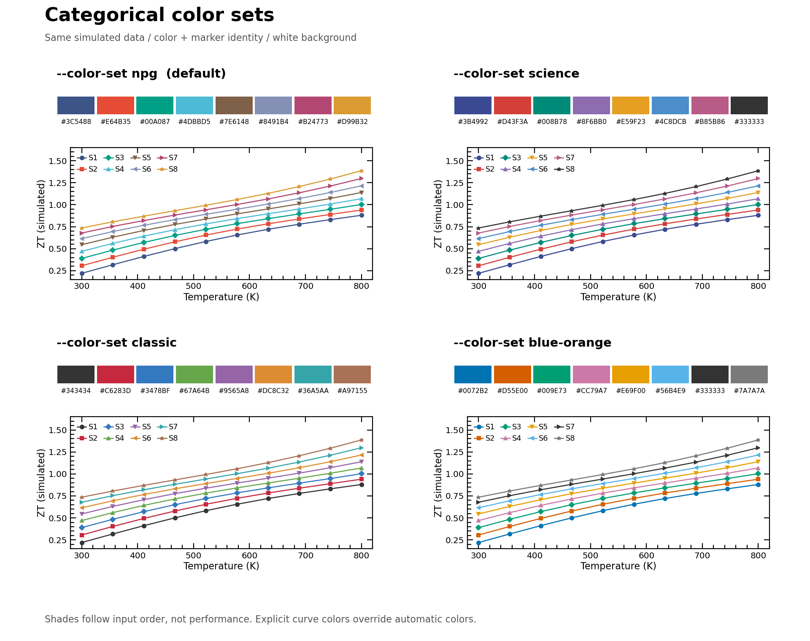
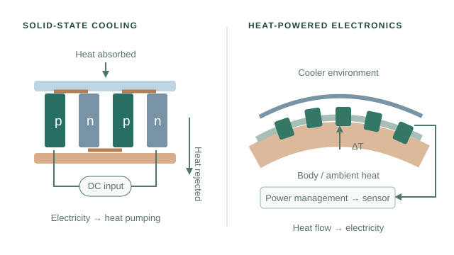
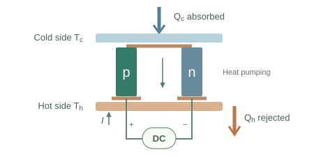
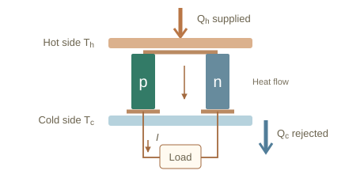

A real package
Code moved from src/ + myplotstyle/ into one installable te_analysis package. Three 1,100–2,100-line plotting scripts were split into focused modules; main.py is now a thin shim.
Materials science · Thermoelectrics · Research software
Thermoelectric semiconductors that bend, and materials data you can trust.
I study how structure, transport, and mechanics shape functional semiconductors, while building agent workflows that make materials data easier to trust, compare, and reuse.
01 / Research & projects
One question runs through my work: how do we make materials results reliable enough to build on, in the lab, in devices, and in the data we extract from them?

Research · Materials, mechanics & energyInorganic semiconductors that deform like metals: thermoelectric cooling and power, semiconductor mechanics, and my work on ductile, tough silver chalcogenides.
Explore the research
Software · TEDEXA local-to-public workspace for thermoelectric data: instrument exports, lab metadata, TE/XRD plotting, SPB fitting, literature context, and traceable reports.
Open the workspace02 / Side project · Feedback welcome
A proposed new website for the group’s research, people, publications and news. Explore it and share suggestions on content, navigation and design.
03 / About & contact
Background, appointments and CV, plus the night-sky images I take when I am away from the lab.
Research appointments, education, publications, and field notes from the night sky.
Read more ConnectEmail is the best way to reach me. Code, notes and project updates are on GitHub.
TEDEX · thermoelectric data workspace
A command-line workspace for thermoelectric research: instrument exports go in, a curated materials database sits in the middle, and publication-style figures, SPB fits and evidence-grounded assessments come out. Every figure on this page was rendered by the current code from public demo data.
python main.pynpg defaultFigures land here.
The materials database
Plots are only as trustworthy as the records behind them. The workspace keeps lab samples and literature samples in the same flat JSON shape, lets me edit them as a readable Markdown ledger, and normalizes every property table to the same 15 SI columns before anything is plotted or ranked.
data/raw/<batch>/
data/reference/*.xlsx
samples.json + lab_metadata.md
composition · modifier · site · density · cp · processing
Raw files are the source of truth. A scan of data/raw/ matches <sample>_ZEM.txt and <sample>_LFA.csv|xlsx and creates any missing batch or sample record.
python main.py sync metadata
Rescans only update structural fields: file paths and whether a processed table exists. Chemistry I curated by hand is carried over untouched.
The database exports to one Markdown ledger, grouped by batch. Compositions, densities, heat capacity and annealing notes are edited in plain tables; file paths stay read-only.
python main.py sync markdown export
Importing parses each field by type: blank numbers become null, comma lists become arrays. Deleting a section never deletes a record unless I pass --prune.
python main.py sync markdown
Papers report mΩ·cm, S/cm, µV/K or µW cm−1 K−2. Headers are matched and scaled to SI, and anything not tabulated (σ, PF, zT, Lorenz, κL, weighted mobility) is derived.
python main.py sync reference-xlsx
A literature sample uses the same fields as a lab sample, plus where it came from. Compositions parsed from sample names are flagged for checking before they are used.
Each sample is reduced to peak values and the temperatures they occur at. Assessment scripts score these deterministically; the language-model layer only interprets the result.
python main.py assess <batch>
RAW_FILE_PATTERN = re.compile(
r"^(?P<sample_id>.+)_(?P<kind>ZEM|LFA)\.(?P<ext>txt|csv|xlsx)$",
re.IGNORECASE,
)
def discover_raw_samples(raw_dir):
discovered = {}
for batch_dir in sorted(p for p in raw_dir.iterdir() if p.is_dir()):
for raw_file in sorted(batch_dir.iterdir()):
match = RAW_FILE_PATTERN.match(raw_file.name)
if not match:
continue
sample = discovered.setdefault(match["sample_id"], {
"sample_id": match["sample_id"], "batch_id": batch_dir.name})
sample[match["kind"].lower()] = relative_path(raw_file)
return discovereddef merge_sample_records(existing_samples, discovered_samples):
samples_by_id = existing_by_key(existing_samples, "sample_id")
for sample_id, discovered in discovered_samples.items():
batch_id = discovered["batch_id"]
existing = samples_by_id.get(sample_id, {})
processed = existing.get("processed_file") or build_processed_path(batch_id, sample_id)
merged = {
"sample_id": sample_id, "batch_id": batch_id,
"zem": discovered.get("zem", existing.get("zem", "")),
"lfa": discovered.get("lfa", existing.get("lfa", "")),
"processed_file": processed,
"processed_exists": Path(processed).exists(),
}
# Curated chemistry survives every rescan.
for key, default in CHEMISTRY_DEFAULTS.items():
merged[key] = existing.get(key, default)
samples_by_id[sample_id] = merged## DEMO-01
<!-- lab-sync:sample DEMO-01-B -->
### Sample DEMO-01-B
- Raw: ZEM `data/raw/DEMO-01/DEMO-01-B_ZEM.txt` · LFA `data/raw/DEMO-01/DEMO-01-B_LFA.xlsx`
- Processed: `data/processed/DEMO-01-processed/DEMO-01-B.csv` (exists)
| Field | Value |
| --- | --- |
| density | 6.71 |
| cp_value | 0.39 |
| matrix_composition | Cu2Se |
| sample_composition | Cu2Se0.96S0.04 |
| optimization_type | alloy |
| modifier_elements | S |
| modifier_amount | 0.04 |
| modifier_site | Se site |
| annealing_condition | 773 K, 48 h |{
"sample_id": "DEMO-01-B",
"batch_id": "DEMO-01",
"zem": "data/raw/DEMO-01/DEMO-01-B_ZEM.txt",
"lfa": "data/raw/DEMO-01/DEMO-01-B_LFA.xlsx",
"processed_file": "data/processed/DEMO-01-processed/DEMO-01-B.csv",
"density": 6.71,
"cp_value": 0.39,
"matrix_composition": "Cu2Se",
"sample_composition": "Cu2Se0.96S0.04",
"optimization_type": "alloy",
"modifier_elements": ["S"],
"modifier_amount": 0.04,
"modifier_site": "Se site",
"synthesis_route": "",
"annealing_condition": "773 K, 48 h"
}# Normalized header -> (standard column, factor to SI)
HEADER_MAP = {
"resistivitymohmcm": ("Resistivity", 1e-5), # mOhm cm -> Ohm m
"conductivityscm": ("Conductivity", 100.0), # S/cm -> S/m
"seebeckuvk": ("Seebeck", 1e-6), # uV/K -> V/K
"pfuwcmk2": ("Power_Factor", 1e-4), # uW/(cm K2) -> W/(m K2)
# ... 16 more header spellings
}
# Fill what the paper did not tabulate:
# sigma = 1/rho, PF = S^2 sigma, zT = PF T / kappa, then L, kappa_e, kappa_L, mu_w, B
df = add_derived_columns(df){
"sample_id": "GeSe-GeSe_Bi2Te3_0_08",
"reference_id": "GeSe",
"matrix_composition": "GeSe",
"sample_composition": "GeSe-Bi2Te3-0.08",
"optimization_type": "alloy",
"modifier_species": "0.08 Bi2Te3",
"modifier_element": "Bi",
"modifier_elements": ["Bi", "Te"],
"modifier_amount": 0.08,
"modifier_unit": "nominal_fraction_from_sample_name",
"performance_file": "data/reference/processed/GeSe/GeSe_Bi2Te3_0_08.csv",
"performance_source": "reference_xlsx_table",
"source_workbook": "data/reference/GeSe.xlsx",
"notes": "Parsed from sample name; verify composition metadata before publication use."
}{
"Samples": "GeSe-Bi2Te3-0.08",
"reference_id": "GeSe",
"optimization_type": "alloy",
"ZT_max": 0.204,
"T_ZT_max(K)": 523.0,
"S_max(V/K)": 1.81e-4,
"T_S_max(K)": 523.0,
"C_max(S/m)": 9454,
"K_min(W/(m*K))": 0.527,
"T_K_min(K)": 673.0,
"KL_min(W/(m*K))": 0.496,
"T_KL_min(K)": 673.0
}Lab records above use a placeholder batch with illustrative values; real sample IDs, raw files and unpublished results stay in the private workspace. The GeSe records come from a published-literature workbook.
The command surface
One launcher routes to every tool, so routine work is discoverable from python main.py --help instead of scattered scripts.
Raw files and the ledger become typed records.
sync metadataZEM and LFA aligned into S, σ, κ, PF, zT, Lorenz, κL, µw, B.
analyze <batch>TE curves, stacked XRD with two PDF cards, recipe-driven flexible plots.
plot-te · plot-xrd · flexibleSPB effective mass, PF/zT versus nH, conductivity-axis fits, lattice parameters.
spb · xrd-latticeDeterministic ranking and trend detection against lab and literature features.
assess · bayesAn agent reads the scored payload, with prompts kept separate from calculations.
agentFigure gallery
Under the hood
Code moved from src/ + myplotstyle/ into one installable te_analysis package. Three 1,100–2,100-line plotting scripts were split into focused modules; main.py is now a thin shim.
76 tests pin behavior before refactors: selector parsing, Markdown round-trips, LFA Excel input, XRD selection, and golden outputs for every flexible recipe, plot-te, plot-xrd and SPB.
--color-set works across TE, XRD, flexible and SPB plots. Sequential palettes span dark to light for batches of one composition, and sample colors stay fixed across panels.

docs/COLOR_SETS.md.Research / Materials, mechanics & energy
Inorganic semiconductors that deform like metals (not polymers) for thermoelectric cooling and power.
From solid-state cooling to heat-powered flexible electronics, I study how thermoelectric performance and mechanical behavior can be designed together.
01 / Thermoelectric materials
Harvesting a temperature difference offers a potential route to battery-free power supplies, while electrically driven thermoelectric devices provide solid-state cooling.[3][4]
Explore the physics & calculators
02 / Mechanics & flexibility
Strength, toughness, and plasticity help determine fabrication yield, device reliability, and where a semiconductor can be used. Thin geometries enable elastic bending; intrinsically plastic materials also allow permanent shaping.[5][6][1]
Explore the mechanical response of semiconductors and ceramics, with metals as a reference. Hover to preview a point, click to keep a selection, or filter by material family.
Swipe the plot horizontally · tap a point or use the material selector below.
No materials shown. Choose a category or reset the view.
Values are approximate and intended to show where material families sit, not to compare individual measurements: elongation depends on test mode, temperature, grain size and specimen form. It is shown as a ductility indicator, not as recoverable bending strain. The two Ag2(S,Se,Te) points are tensile elongations from my own study.[1]
| Material / example | Category | Band gap | Elongation |
|---|
03 / My representative work
My work examines thermoelectric transport and mechanical properties in the Ag2(S,Se,Te) family, focusing on compressive plasticity and fracture toughness in Ag2Se-based alloys and tensile ductility in cubic Ag2(S,Se,Te).
 Ag₂Se-based · National Science Open, 2025
Ag₂Se-based · National Science Open, 2025Ag2Se0.9Te0.1 combines near-room-temperature thermoelectric performance with substantial compressive deformation and resistance to crack propagation.
Explore the Ag₂Se-based study Ag₂(S,Se,Te) · Advanced Energy Materials, 2024
Ag₂(S,Se,Te) · Advanced Energy Materials, 2024High-entropy cubic alloys combine large tensile elongation with useful thermoelectric transport, enabling roller-pressed foils and a flexible in-plane device.
Explore the ductile alloy studyTwo complementary routes: the Ag2Se-based alloys deform in compression and resist cracking but stay brittle in bending, while the cubic Ag2(S,Se,Te) alloys stretch in tension and roll into foils.[2][1]
Foundations, device context, and my representative work.
Heyang Chen et al. High-Entropy Cubic Pseudo-Ternary Ag₂(S, Se, Te) Materials With Excellent Ductility and Thermoelectric Performance. Advanced Energy Materials 14, 2303473 (2024).
Heyang Chen, Shenghong Ren et al. Robust mechanical properties of Ag₂Se₁₋ₓTeₓ thermoelectric materials. National Science Open 4, 20250005 (2025).
S. Hong et al. Wearable thermoelectrics for personalized thermoregulation. Science Advances 5, eaaw0536 (2019).
S. Yang et al. Flexible thermoelectric generator and energy management electronics powered by body heat. Microsystems & Nanoengineering 9, 106 (2023).
J. Peng & G. J. Snyder. A figure of merit for flexibility. Science 366, 690–691 (2019).
X. Shi et al. Room-temperature ductile inorganic semiconductor. Nature Materials 17, 421–426 (2018).
01 / Thermoelectric applications
A Peltier cooler pumps heat with an electrical current and no moving parts, which makes it a candidate for cooling the hottest spots on a chip. The Seebeck effect runs the same physics in reverse to generate power.
01 / Why it matters now
A modern system-on-chip packs CPU, GPU and AI cores into a few square centimetres, and its power is not spread evenly. A core at full load forms a hotspot whose local heat flux is far above the die average, and the whole chip throttles once that spot reaches its temperature limit. Fans, heat pipes and liquid loops cool the package as a whole; a thermoelectric cooler can pump heat away from one spot, on demand.[1][2]
a Top view · power is uneven
b Cross-section · cooling the hotspot
Fast
Heat pumping tracks the drive current, so the cooler can react to a burst of computation as it happens. Thin films respond faster still, because heat crosses only micrometres of material.
Stable
No moving parts, refrigerant or vibration. Reversing the current heats instead of cools, so closed-loop control can hold a temperature steady, as is standard for laser diodes and sensors.
Targeted
A cooler the size of a core sits only where heat is generated, and each one can be driven separately, instead of over-cooling the whole package to protect its hottest point.
Bulk modules reach a maximum cooling flux of only about 10 W cm⁻²; thin-film superlattice modules have reached 258 W cm⁻², approaching what hotspots demand.[3] Whether active cooling pays off depends on COP and module design, explored below.
Peltier effect
An electrical current pumps heat from the cold side to the hot side.

Peltier heat is only one contribution to the net cooling power.
Seebeck effect
A temperature difference generates a voltage; a connected load receives electrical power.

Open-circuit voltage for a constant effective Seebeck coefficient α.
Material figure of merit
S: Seebeck coefficient (written α in the device formulas) · σ: electrical conductivity · ρ = 1/σ · κ: total thermal conductivity.
Device parameter used in the plots
T̄ = (Th + Tc)/2. α: effective Seebeck coefficient · R: electrical resistance · K: thermal conductance.
The plots use an ideal, single-stage, constant-property model. Device ZT̄ represents the operating temperature interval; it is not a material’s peak zT.[4][5][6]
03 / Peltier cooling
COP is heat removed per unit of electrical input. For chip cooling the hot side sits at the heat sink, which can approach 100 °C under load, and ΔT is usually modest (10–30 K), where COP is highest. Adjust ZT̄ within today’s practical range.
Up to 400 K covers a hot chip package (about 100 °C = 373 K).
Cold side: Tc = Th − ΔT.
COP falls steeply as ΔT grows, which is why thermoelectric chip coolers work best on small, local temperature differences. Below the shaded ZT̄ threshold, no current gives net cooling.
04 / Multi-couple cooler
A module wires N p–n couples electrically in series and thermally in parallel, so α, R and K all scale with N. Leg geometry sets the drive current and the heat flux: shorter legs pump more heat per area, until contact resistance takes over.
Cold side: Tc = Th − ΔT.
Heat-sink side. A loaded SoC runs close to its junction limit, typically about 100 °C (373 K).
A high-performance SoC dissipates on the order of 100–300 W.
Module properties are calculated from the leg design.
Working environment: a 150 W SoC
| Device | Max cooling per module | Modules needed | Current each | Electrical input | COP | Heat sink must reject |
|---|
Each row uses the fewest identical modules that can carry the load, all sharing it equally at the lower (more efficient) current. Commercial rows use the same Bi₂Te₃ model: the 6 A class matches a common 40 × 40 mm, 127-couple module; the 15 A class uses wider legs in the same footprint. A thin-film cooler is meant for the hotspot share of the power, not the whole package.
Maximum COP and maximum cooling power occur at different currents.
Compare the designs: the bulk module moves the most heat in total, but the thin-film cooler concentrates it, giving the highest flux over the smallest footprint. That is the regime needed for a hotspot.
Valid when positive net cooling is possible.
At Qc = 0, fixed Th and constant Z = α²/(RK). This no-load limit does not describe a device removing a finite heat load.
Standard constant-property results.[4]
05 / Seebeck power generation
The Carnot limit sets the available thermodynamic efficiency. Finite ZT̄ reduces the fraction a thermoelectric generator can attain.
A small ΔT limits the available efficiency even at high ZT̄. The curves assume an electrical load optimized for efficiency, rather than maximum output power.[6]
Solid-state cooling. Heat must be rejected at the hot side, including the electrical input: Qh = Qc + Pin. On a chip or on skin, the thermal interfaces and the heat sink matter as much as the cooler.[7]
Battery-free electronics. Body heat or another available heat source can supply low-power sensors when the harvested energy meets the load. The temperature difference across the device, power conversion and sensing duty cycle matter.[8]
Steady-state, one-dimensional, single-stage transport with constant α, R and K over each temperature interval. Ideal contacts; no parasitic heat leaks, Thomson heat, or heat-exchanger losses. Joule heat is split equally between the two ends. Temperatures are absolute (K), and ΔT = Th − Tc.
For one p–n couple, α = Sp − Sn, R = Rp + Rn, and K = Kp + Kn. A module uses effective totals. K (W K⁻¹) is thermal conductance; κ (W m⁻¹ K⁻¹) is material thermal conductivity.
In the module plot, α, R and K are built from N couples of Bi₂Te₃-like legs (S = ±200 μV K⁻¹, ρ = 1.0 × 10⁻⁵ Ω m, κ = 1.5 W m⁻¹ K⁻¹, so zT ≈ 0.8 at 300 K), with an electrical contact resistivity of 1 × 10⁻¹⁰ Ω m² at each leg end and legs covering 30% of the footprint. Thermal contact resistance and ceramic plates are neglected. The material properties are held at their room-temperature values across the 300–400 K hot-side range; real Bi₂Te₃ zT changes with temperature, so readings at high Th are indicative. The thin-film design keeps the same bulk properties to isolate the effect of geometry; real superlattice films differ. In the efficiency sweeps, ZT̄ is an independent effective parameter at each condition. The ΔT sweep at fixed ZT̄ compares idealized conditions, not the temperature dependence of one specific material. All curves are calculated examples, not measurements of the Ag₂(S,Se,Te) materials.
Chip cooling, the device model, and application examples.
J. Mao, G. Chen & Z. Ren. Thermoelectric cooling materials. Nature Materials 20, 454–461 (2021).
I. Chowdhury et al. On-chip cooling by superlattice-based thin-film thermoelectrics. Nature Nanotechnology 4, 235–238 (2009).
G. Bulman et al. Superlattice-based thin-film thermoelectric modules with high cooling fluxes. Nature Communications 7, 10302 (2016).
H. J. Goldsmid. Introduction to Thermoelectricity, 2nd ed. Springer Series in Materials Science 121 (2016). Cooling balance, maximum COP and optimal currents.
D. M. Rowe (ed.). CRC Handbook of Thermoelectrics. CRC Press (1995). Single-stage module heat and electrical-power balances.
G. J. Snyder & E. S. Toberer. Complex thermoelectric materials. Nature Materials 7, 105–114 (2008). Material zT, device ZT and maximum generation efficiency.
S. Hong et al. Wearable thermoelectrics for personalized thermoregulation. Science Advances 5, eaaw0536 (2019).
S. Yang et al. Flexible thermoelectric generator and energy management electronics powered by body heat. Microsystems & Nanoengineering 9, 106 (2023).
02 / Mechanics & flexibility
What determines whether a semiconductor device can be manufactured intact, operate reliably, and work in a new environment? Alongside its electronic and thermal properties, its mechanical response is a key part of the answer.
Part 01 / Why mechanical properties matter
Strength, elastic limits, plastic deformation, and resistance to fracture matter at different stages of a device’s life. No single mechanical metric describes them all.[1]
Cutting, thinning, handling, and assembly impose local stresses. Strength and flaw tolerance help determine whether a component survives processing.
Strength · toughness · processabilityThermal expansion and repeated mechanical loads can damage the semiconductor or its contacts. Stable operation requires both structural and functional integrity.
Elastic limits · cracks · fatigueA rigid package, a skin-mounted sensor, and a formed foil need different responses: dimensional stability, reversible bending, or permanent shape change.
Stiffness · flexibility · plasticityA common language
The curve separates how easily a material deforms, how much stress it supports, and whether that deformation is recoverable.
Energy absorption
The area under a uniaxial stress–strain curve up to fracture represents absorbed energy per unit volume. Both the sustained stress and the available strain matter.
Crack resistance
Resistance to the growth of an existing crack is a separate property. KIC (MPa m1/2) requires a suitable fracture test; it cannot be read directly from this curve.
Material properties set part of the operating window. Defects, specimen size, loading mode, interfaces, and temperature also affect fabrication yield and device reliability.
Part 02 / Flexibility in real applications
Flexibility connects mechanical properties to the shape and motion of an application. Start with the required deformation, then choose the material and architecture.
Conform & follow motion
Fit a curved surface and move with the body while maintaining contact and electrical function.
Evaluate Bending radius, repeated cycles, contact stability, and output under motion.
Wrap a curved surface
Use thin semiconductor sheets on curved supports. Edge and surface quality become part of the mechanical design.[2]
Evaluate Surface strain, edge defects, thermal cycling, and retained efficiency.
Form & retain a shape
Roll or form a plastic semiconductor into a useful geometry, then operate it within an appropriate service window.[3]
Evaluate Forming strain, cracking, and transport properties after deformation.
Material × geometry
For a thin, homogeneous sheet of thickness h bent to radius R, reducing thickness lowers both the surface strain at a given radius and the force needed to bend it. This gives an elastic route to flexibility.[4]
Thinner sheet → less strain at the same radius.
Use the recoverable strain limit; fracture can set the limit in brittle materials.
Elastic flexibility
Bend and recover during use.
Intrinsic plasticity
Form a permanent shape without fracture.
A ductile thin foil can use both: plastic forming during fabrication and elastic bending during service.
| Design question | Extrinsic flexibility | Intrinsic plasticity |
|---|---|---|
| What changes? | Thickness, geometry, interconnects, or the supporting architecture. | Permanent deformation within the semiconductor. |
| How does it work? | Reduce strain in a thin sheet or accommodate bending between rigid elements. | Enable slip and other plastic deformation mechanisms before fracture. |
| Examples | Thin silicon sheets; rigid TE pillars in flexible supports. | Ductile α-Ag2S and selected Ag2S-based alloys. |
| What must be checked? | Curvature, surface strain, interfaces, and cyclic reliability. | Loading mode, plastic strain, toughness, and retained transport properties. |
The two routes can be combined. Thin foils made from a ductile semiconductor benefit from both their material response and their geometry.[5][4][6][3]
Interactive / Extrinsic flexibility
A thin silicon sheet can bend elastically even though bulk silicon is brittle. Drag the thickness to explore why.
Thin enough to reach the target radius and recover on release.
Geometry schematic · thickness exaggerated · no substrate
Assumed failure strain 0.50%
At this radius, hc = 100 μm
Illustrative failure criterion, not a measured Si threshold. Actual limits depend on defects, surfaces, orientation, and loading.
Less thickness → less strain.
Rmin = h / (2εlimit)
∝ h³ · normalized to a 500 μm sheet
Geometry changes the bending response. The material remains intrinsically brittle. Elastic bending recovers on unloading; plastic deformation leaves a permanent shape change.
For a homogeneous, free-standing sheet in elastic bending, the neutral plane lies at mid-thickness and εmax = h/(2R). Here, R is measured at that plane. The illustrative limit εlimit = 0.50% is held constant as thickness changes; equality marks the failure boundary.
At a chosen R, hc = 2Rεlimit. This is a geometry-dependent boundary, not a universal brittle-to-flexible transition. Above it, the schematic shows fracture before the target curvature is reached; the strain readout is the required target strain, not a post-fracture measurement. Changing thickness or radius starts a new specimen.
For fixed width, elastic modulus, and Poisson ratio, bending rigidity scales as h³. The visualization prescribes curvature rather than force. Real strength may also depend on thickness, surface damage, edge quality, and flaw statistics. Substrates and multilayers shift the neutral plane.
Peng and Snyder express flexibility as 1/Rmin = (2/h)(σy/E), with σy/E as the material figure of merit. For this brittle-Si illustration, εlimit denotes a fracture limit rather than plastic yielding.
Material response / Intrinsic plasticity
Room-temperature ductility in α-Ag2S showed that an inorganic semiconductor can undergo substantial plastic deformation. The reported bonding picture combines relatively weak interactions between planes with bonding rearrangements that suppress cleavage during slip.[6]
Alloying within silver chalcogenides then provides a way to connect deformability with thermoelectric transport. Ag2S-based materials have been used in flexible inorganic thermoelectric devices; my cubic Ag2(S,Se,Te) study extends the composition–structure–property design space.[7][3]
Plasticity depends on composition, phase, temperature, and loading. The ductility of one Ag2S-based material should not be assigned to every silver chalcogenide.
Part 03 / Ag–S–Se–Te materials through time
A timeline of Ag2S and its S/Se/Te alloys: from bulk plasticity to shapeable thermoelectrics, rolled foils, and wearable devices.
Selected milestones, 2018–2026 · chronological order, not to scale · drawings are schematic; my 2024 photograph opens enlarged
Discovery
Machining and hammering reveal room-temperature plasticity in bulk α-Ag2S.
Alloying & shaping
Te alloying combines shape conformability with thermoelectric performance.
p–n integration
Ductile AgCu(Se,S,Te) provides the p-type partner for n-type Ag20S7Te3.
My work · ternary alloys
High-entropy cubic alloys can be rolled into flexible thermoelectric foils.
Heyang Chen et al.
Advanced Energy Materials 14, 2303473 (2024).
Processing extension
Warm rolling at 393 K turns Ag2Se into a large, free-standing sheet.
January · dense blade arrays
Dense n-Ag2(S,Se)/p-AgCu(Se,S,Te) blade arrays power an electronic watch.
Watch demonstration: 273 K ambient, 1 m s−1 airflow.
C. Sun et al.
Energy & Environmental Science 19, 1080–1087 (2026).
March · wearable systems
A conformal 600-couple array powers an LED and supports wearable systems.
One materials family, several routes. The timeline follows Ag2(S,Se,Te) materials and their device development. Cu-containing p-type partners and warm processing extend what can be built from this family.
AgCu(Se,S,Te) is a distinct Cu-containing p-type family, paired with n-type silver chalcogenides in the 2022 and 2026 devices. The 2025 Ag2Se sheet demonstrates warm processing at 393 K, rather than room-temperature ductility.
The 2026 demonstrations depend on the reported ambient temperature and airflow. The Watt health-monitoring system also includes a supercapacitor and a voltage-boost circuit, and acquires data intermittently. The timeline does not compare device outputs measured under different conditions.
Background and related research cited in this chapter.
Heyang Chen et al. Room-temperature plastic inorganic semiconductors for flexible and deformable electronics. InfoMat 3, 22–35 (2021). Figure 1A and Sections 2–3.
W. Liu et al. Flexible solar cells based on foldable silicon wafers with blunted edges. Nature 617, 717–723 (2023).
Heyang Chen et al. High-Entropy Cubic Pseudo-Ternary Ag₂(S, Se, Te) Materials With Excellent Ductility and Thermoelectric Performance. Advanced Energy Materials 14, 2303473 (2024).
J. Peng & G. J. Snyder. A figure of merit for flexibility. Science 366, 690–691 (2019).
S. Hong et al. Wearable thermoelectrics for personalized thermoregulation. Science Advances 5, eaaw0536 (2019).
X. Shi et al. Room-temperature ductile inorganic semiconductor. Nature Materials 17, 421–426 (2018).
J. Liang et al. Flexible thermoelectrics: from silver chalcogenides to full-inorganic devices. Energy & Environmental Science 12, 2983–2990 (2019).
S. Yang et al. Ductile Ag20S7Te3 with Excellent Shape-Conformability and High Thermoelectric Performance. Advanced Materials 33, 2007681 (2021).
Q. Yang et al. Flexible thermoelectrics based on ductile semiconductors. Science 377, 854–858 (2022).
Z. Gao et al. Warm metalworking for plastic manufacturing in brittle semiconductors. Nature Materials 24, 1538–1544 (2025).
C. Sun et al. A highly integrated blade structure for thermoelectric devices with ultra-high output voltage and power densities. Energy & Environmental Science 19, 1080–1087 (2026).
C. Sun, X. Zhao et al. Flexible thermoelectric device with blade-like structure for ultrahigh output performance. Watt 1, 3 (2026).
03 / My work · Ag₂Se-based thermoelectrics
Our Ag₂Se₁₋ₓTeₓ study connects near-room-temperature thermoelectric performance with compressibility, strength, and resistance to crack propagation. Ag₂Se₀.₉Te₀.₁ is a representative composition.
The mechanical evidence
We measured compression and bending response, fracture toughness, and energy absorption across a series of Ag2Se1−xTex compositions. Ag2Se0.9Te0.1 reaches a compression strength of 279 ± 49 MPa alongside its large compressive strain.
Fracture toughness and energy absorption add complementary evidence of robustness; in bending, the alloys remain brittle.[1]
Microstructural insight
TEM after compression reveals dense dislocations and dislocation arrays, and sub-grain boundary structures point to a possible contribution from sub-grain rotation.
Together they link the macroscopic response to deformation inside the grains.[1]
Thermoelectric transport
The nominal Ag2Se0.9Te0.1 composition reaches zT = 0.78 at 300 K and 1.1 at 380 K. Small Ag deficiencies, kept out of the nominal label, optimize the carrier concentration.
The result brings compressive plasticity and high fracture toughness into the same material design discussion as carrier transport and thermal conductivity.[1]
Sources for this chapter.
Heyang Chen, Shenghong Ren et al. Robust mechanical properties of Ag₂Se₁₋ₓTeₓ thermoelectric materials. National Science Open 4, 20250005 (2025).
03 / My work · Ag₂(S,Se,Te)
High-entropy design in the pseudo-ternary Ag₂S–Ag₂Se–Ag₂Te system connects cubic crystal structure, tensile ductility, and thermoelectric transport. The materials can be shaped and roller-pressed into flexible foils.
Composition & structure
We compiled composition–structure–plasticity–zT maps across the pseudo-ternary alloy system and outlined the cubic region. The equimolar S/Se/Te anion composition provides a high-entropy starting point, while small Ag deficiencies tune carrier concentration.[1]
Intrinsic ductility
Ag2S1/3Se1/3Te1/3 reaches approximately 97% tensile elongation; Ag1.98S1/3Se1/3Te1/3 reaches approximately 60%. Necking, slip bands, and local strain evolution provide evidence of large plastic deformation.
This tensile response supports a different processing opportunity from the compressive plasticity of the Ag2Se-based alloys.[1]
Transport optimization
Ag deficiency lowers the carrier concentration and adjusts electrical and thermal transport. Ag1.98S1/3Se1/3Te1/3 reaches zT = 0.45 at 300 K and 0.8 at 460 K.
The room-temperature κ–σ analysis suggests an average lattice thermal conductivity of approximately 0.2 W m−1 K−1 in the studied cubic materials.[1]
From bulk material to a device
Rolling produces foils down to 30 μm. A separate bending test on a 30 μm foil maintains R/R0 within 99.2–101.3% over 150 cycles, with a minimum bending radius of approximately 3 mm.
A six-leg in-plane generator uses 50 μm Ag1.98S1/3Se1/3Te1/3 foils, Pt wires, and Cu electrodes. In the laboratory at ΔT = 30 K, it delivers a maximum output power of 12.8 μW and a reported maximum power density of 14.3 W m−2.[1]
Sources for this chapter.
Heyang Chen et al. High-Entropy Cubic Pseudo-Ternary Ag₂(S, Se, Te) Materials With Excellent Ductility and Thermoelectric Performance. Advanced Energy Materials 14, 2303473 (2024).
Heyang Chen
I am a Research Fellow at Nanyang Technological University and a Visiting Postdoctoral Fellow at Northwestern University. My research connects materials synthesis, transport physics, and mechanical properties.
My work spans high-entropy thermoelectric materials, ductile inorganic semiconductors, and flexible devices. I also develop TEDEX, a workspace for experimental data management, transport modeling, scientific plotting, and AI-assisted materials screening.
Research appointments
– Present
Visiting Postdoctoral Fellow · Department of Chemistry
Evanston, IL, USA
Supervisor: Prof. Mercouri G. Kanatzidis
Exploring new chalcogenides and high-entropy thermoelectric materials with low thermal conductivity, alongside TEDEX workflows for data analysis and AI-assisted materials screening.
– Present
Research Fellow · School of Materials Science and Engineering
Singapore
Supervisor: Prof. Qingyu Yan
Research in thermoelectric materials and their electrical and thermal transport properties.
Academic background
–
Ph.D. in Materials Science and Engineering
Shanghai, China
Supervisors: Prof. Xun Shi and Prof. Tian-Ran Wei
Doctoral research on thermoelectric transport and plasticity in inorganic semiconductors, including silver chalcogenides and van der Waals materials for flexible thermoelectric devices, wearable electronics, and sensors.
–
B.S. in Materials Science and Engineering
Shanghai, China
Beyond research
Outside the lab, I enjoy astrophotography and keeping small visual records of the world around me. This is a home for deep-sky images and personal notes.
Astrophotography
My own nebula and Milky Way frames, paired with a few object facts. Distances are approximate, and wide-field images can include structures at many depths along the same line of sight.
The nearest major spiral galaxy to the Milky Way, bright enough to see from a dark site.
Lace-like shock fronts from an ancient stellar explosion, spread across a huge patch of Cygnus.
A star-forming emission nebula that contains the famous Pillars of Creation region.
A turbulent supernova remnant where the blast wave is interacting with surrounding gas clouds.
A broad H II region shaped by glowing hydrogen gas and dark dust lanes near Deneb.
A circular stellar nursery whose central young cluster has carved a cavity in the gas.
A long, faint emission nebula ionized by nearby hot stars in the Perseus region.
A dense summer Milky Way field with dark dust, bright stars, and layered hydrogen emission.
Two Sagittarius nebulae in one frame: glowing star formation, blue reflection, and dark lanes.
Pet
Photos and small records can live here later.
Bird
Field sightings, photos, and short notes can live here later.
Running
Routes, races, and training snapshots can live here later.
Contact
Email is the best way to reach me. You can also find code, notes, and project updates on GitHub.
Research homes